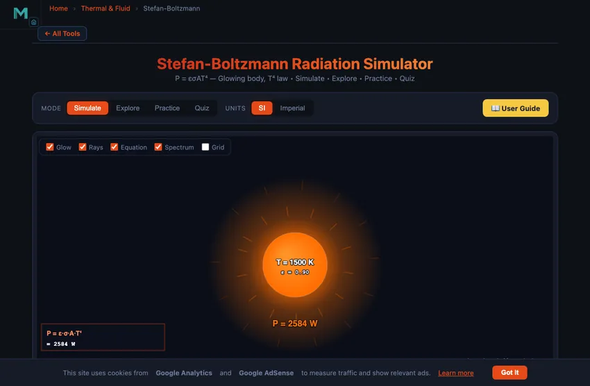
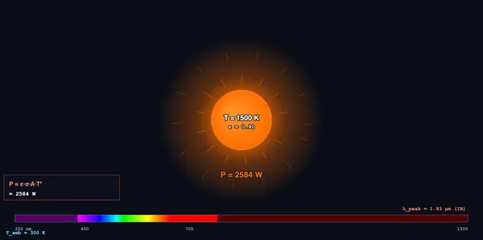

Stefan-Boltzmann Radiation Simulator
P = εσAT⁴ — Glowing body, T⁴ law • Simulate • Explore • Practice • Quiz
Display Controls
Σ Live equations — values substituted
⚖ Temperature scale — P at common T
💡 What-if coach — insights
1 Overview
The Stefan-Boltzmann Simulator visualises the famous T⁴ law: every object hotter than absolute zero radiates electromagnetic energy with power P = ε·σ·A·T⁴. Slide the temperature from 200 K to 6000 K and watch the body change colour from invisible (room T) through dim red (~1000 K), bright orange (~1500 K), yellow-white (~3000 K, light bulb filament), and finally to white-blue near the Sun’s 5800 K.
Built for high-school and technical-college physics students learning thermal radiation, with Practice and Quiz modes for self-testing.
2 Configuring the System
The simulator opens at T = 1500 K (about hot iron), ε = 0.90, A = 100 cm². Power radiated is P ≈ 258 W — about half a household lightbulb. Try the Sun Surface preset (5800 K) and watch P jump to ~570 kW per the same area — almost a thousand times more, because of the T⁴ dependence.
3 Running the Cycle
The canvas shows a circular body glowing with a colour that matches its temperature (using a smoothed black-body colour mapping). Glow rays emanate from the body, with intensity proportional to P. The peak wavelength λpeak is computed via Wien’s law — in the red at ~1500 K, near-infrared at room T, ultraviolet for stellar temperatures.
Eight readout cards show emitted P, net P (after subtracting ambient back-radiation), flux M = P/A, λpeak, color region, T in °C and °F, and the ratio of emitted to ambient power. Six presets cover human body, hot iron, light-bulb filament, lava, the Sun, and red giants.
4 The Underlying Theory
Four categories: Basics (black body, temperature radiation, why heated objects glow), Formulas (Stefan-Boltzmann derivation, Wien’s law, emissivity), Applications (incandescent bulbs, infrared thermography, climate balance, stellar classification), Common Errors (Kelvin vs Celsius, T⁴ dependence, surface area vs volume).
5 Try a Problem
Practice generates problems — compute P at given T, ε, A; find required T for a target power; identify the dominant colour region. Quiz tests T⁴ intuition, emissivity, and Wien’s law.
6 Engineering Notes
- Always use absolute temperature in Kelvin! T(K) = T(°C) + 273.15. Plugging Celsius directly gives a wildly wrong answer.
- P scales with T4 — doubling T multiplies P by 16×. Tripling T multiplies P by 81×.
- Net radiation (when in surroundings at Tamb) is Pnet = εσA(T4 − Tamb4). At room temperature your body radiates and absorbs near-equal power.
- Polished metal has very low ε (0.03 for silver). Deliberately poor radiators are used to limit heat loss in vacuum flasks and satellites.
- Pair this with the Heat Transfer Modes simulator to compare conduction, convection, and radiation.
Understanding Stefan-Boltzmann Radiation


The Stefan-Boltzmann law is the master equation of thermal radiation: every body at absolute temperature T radiates total power P = ε·σ·A·T4, where σ = 5.67×10−8 W/(m²·K4) is the Stefan-Boltzmann constant, A is the surface area, and ε is emissivity (0–1, 1 = perfect black body).
Power Radiated at Different Temperatures
| Object | T (K) | T (°C) | Flux (W/m²) at ε = 1 | Color |
|---|---|---|---|---|
| Cosmic microwave background | 2.7 | −270 | 3.0×10−6 | Invisible |
| Frozen ice | 270 | −3 | 301 | Far IR |
| Human body | 310 | 37 | 523 | Far IR |
| Hot iron (dim red) | 1000 | 727 | 56 700 | Dim red |
| Lava | 1500 | 1227 | 287 000 | Bright orange |
| Light bulb filament | 3000 | 2727 | 4.59 MW/m² | Yellow-white |
| Sun surface | 5800 | 5527 | 64.2 MW/m² | White |
| Star (Sirius A) | 10 000 | 9727 | 567 MW/m² | Blue-white |
The T&sup4; Power Law
The fourth-power dependence is what makes radiation so dramatic. Doubling temperature gives 16× more power. The Sun at 5800 K radiates ~570 kW/m²; at 11 600 K it would radiate 9 MW/m². This is also why incandescent bulbs are so inefficient: only ~5% of the radiation falls in the visible band — the rest is wasted as infrared heat.
Wien’s Displacement Law
While total power follows T⁴, the peak wavelength of radiation shifts inversely with T: λpeak = 2898 μm·K / T. Cool objects radiate in the infrared (invisible). At ~700 K things start glowing dim red. At ~3000 K (incandescent bulbs) we get yellow-white. The Sun at 5800 K peaks in the green band (which is why our eyes evolved to see green most sensitively!), with broad spread giving white appearance.
Emissivity and Real Surfaces
A perfect black body (ε = 1) absorbs and emits all radiation. Real surfaces have lower emissivity. Polished aluminium has ε ≈ 0.04 — emits only 4% of black-body power. Anodised aluminium 0.77. Human skin 0.98. Soot 0.95. Low-emissivity ("low-E") windows and reflective paints exploit this to limit radiative heat exchange.
Engineering Applications
Incandescent bulbs use tungsten at 3000 K because higher T gives higher visible-light fraction. Infrared thermometers measure T from radiated power and assumed ε. Climate science balances incoming solar radiation against Earth’s outgoing infrared (P_in = P_out). Spacecraft thermal control uses high-ε radiator panels to dump heat into the cold of space, since vacuum eliminates conduction and convection.
The T4 Scaling — Why a 2× Temperature Means 16× Power
The single most important thing about Stefan-Boltzmann is the fourth-power dependence. Double the absolute temperature, the radiated power increases by 24 = 16. Triple it, 81×. This is dramatic and unintuitive.
A practical example: a kitchen oven at 200 °C (473 K) radiates 2840 W/m² from its walls. The same oven at 250 °C (523 K) radiates 4250 W/m² — 50% more power for a 10% temperature rise. This is why oven-cleaning self-cleaning cycles work: heating to 500 °C (773 K) jumps radiated power to 20,200 W/m², which is enough to incinerate grease deposits but obviously requires a sealed cavity.
How the Sun’s Power Reaches Earth — The Full Calculation
This is the calculation that started the field. Sun surface temperature 5778 K. Solar radius 6.96×108 m. Emissivity essentially 1 (close to a perfect blackbody).
| Step | Working | Result |
|---|---|---|
| Solar surface flux | P/A = σT4 = 5.67×10−8 × 57784 | 6.32×107 W/m² |
| Solar surface area | 4πR² = 4π(6.96×108)² | 6.09×1018 m² |
| Total solar luminosity | P = flux × area | 3.85×1026 W |
| Spread over Earth’s orbit (4πd², d = 1.5×1011 m) | P / (4πd²) | 1361 W/m² |
1361 W/m² is the “solar constant.” Measured by satellites at the top of Earth’s atmosphere; matches the calculation to within 0.1 %. That number is the budget every solar panel, climate model, and crop-growth model on Earth ultimately works from.
Emissivity — Why a Polished Surface Stays Cool
The ε factor in the equation matters as much as T4. Polished metals have ε below 0.1; anodised aluminium around 0.8; oxidised iron 0.85; the human body 0.97. A perfect mirror would have ε = 0 and not radiate at all (it would also reflect everything that hit it).
This is why thermos flasks use silvered inner walls (low emissivity blocks radiation heat transfer), why spacecraft are wrapped in gold foil (reflects sunlight, has low IR emission), and why thermal cameras can detect surface treatments at a glance: a polished area looks “cold” even when it isn’t.
References
- Incropera — Fundamentals of Heat and Mass Transfer, 7th ed., Chapter 12 (Radiation).
- Stefan, J. (1879) — Über die Beziehung zwischen der Wärmestrahlung und der Temperatur. Sitzungsberichte der Akademie. The original derivation.
- NIST — Reference values for emissivity of common materials.
Who Uses This Simulator?
This Stefan-Boltzmann simulator is used by high-school physics students learning thermal radiation, technical-college trainees in heat transfer, mechanical and aerospace engineers sizing thermal radiators, climate-science students modelling planetary energy balance, and astronomy students applying the formula to stars. Practice and Quiz modes ensure students master both the formula and the dramatic T⁴ intuition.
Explore Related Simulators
Explore our Heat Transfer Modes, Thermal Conductivity, Specific Heat Capacity, Phase Change & Latent Heat, and Heat Exchanger, and Thermocouple simulators.